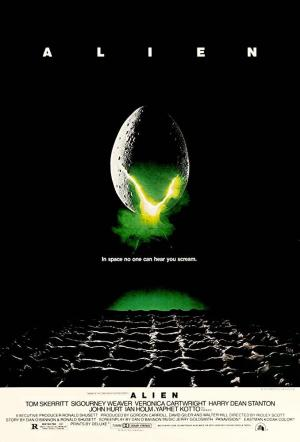

Alien, El octavo pasajero |
||
|---|---|---|
|  | Sinopsis: De regreso a la Tierra, la nave de carga Nostromo interrumpe su viaje y despierta a sus siete tripulantes. El ordenador central, MADRE, ha detectado la misteriosa transmisión de una forma de vida desconocida, procedente de un planeta cercano aparentemente deshabitado. La nave se dirige entonces al extraño planeta para investigar el origen de la comunicación. |
Director: Ridley Scott Reparto:Sigourney Weaver, John Hurt, Yaphet Kotto Año: 1979 Duracion:116 min Pais:Estados Unidos |
Criticas Profesionales:Jordi Batlle CaminalObra maestra, filme hermoso, tenebroso, tenso, angustioso cuento gótico de horror por cuyas arterias y espeluznantes pasillos corren fantasmas de Conrad y Lovecraft. Es el suspense sobrecogedor, el más sobrecogedor de los últimos tiempos. |
Trailer |
Obtener:AlquilarComprar |
Registrate/Iniciar Sesion